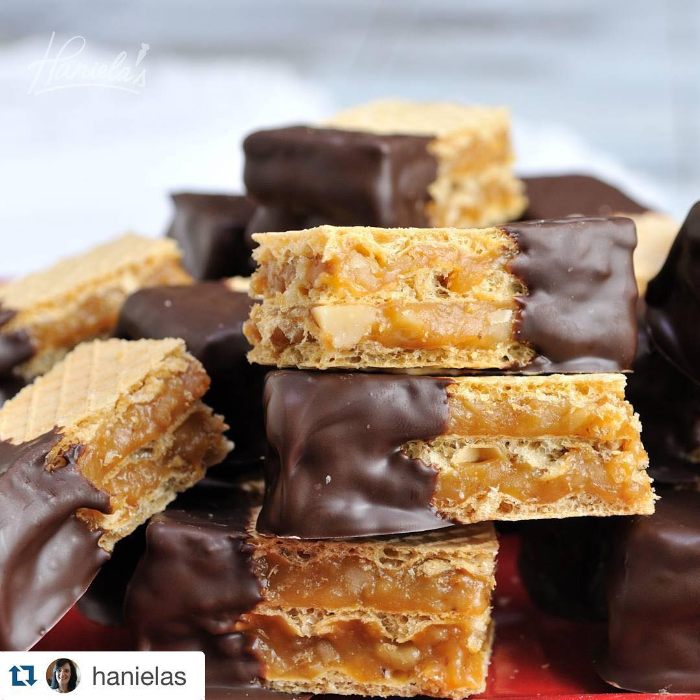

Grilážové rezy podľa @creativecakesbysharon — Normy Jedál
#Repost @hanielas with @repostapp.
・・・
NEW VIDEO : CARAMEL WALNUT WAFER BARS
Video Tutorial is posted on my you tube channel HANIELA'S
Link to my channel is posted in my profile, video can be found in the Sweet Recipe Playlist or Christmas Playlist
#hanielas#cookies#grilazoverezy#cookies#walnuts#caramel#waferbars